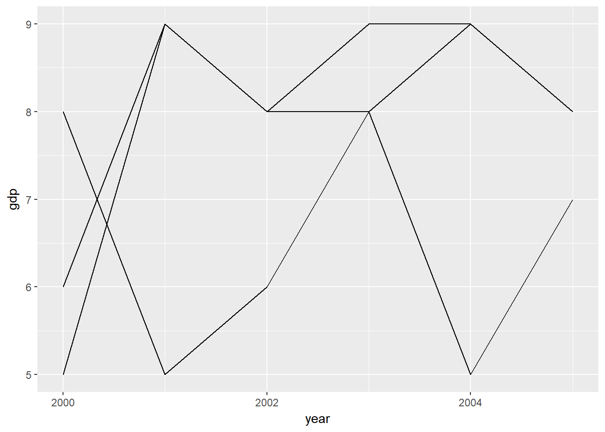

Introduction
This is the 8th post in the series Elegant Data Visualization with ggplot2. In the previous post, we learnt to build scatter plots. In this post, we will learn to
- build
- simple line chart
- grouped line chart
- map aesthetics to variables
- modify line
- color
- type
- size
Case Study
We will use a data set related to GDP growth rate. You can download it from here. It contains GDP (Gross Domestic Product) growth data for the BRICS (Brazil, Russia, India, China, South Africa) for the years 2000 to 2005.
Data
gdp <- readr::read_csv('https://raw.githubusercontent.com/rsquaredacademy/datasets/master/gdp.csv')## Warning: Missing column names filled in: 'X1' [1]gdp## # A tibble: 6 x 6
## X1 X year growth india china
## <int> <int> <date> <int> <int> <int>
## 1 1 1 2000-01-01 6 5 8
## 2 2 2 2001-01-01 9 9 5
## 3 3 3 2002-01-01 8 8 6
## 4 4 4 2003-01-01 9 8 8
## 5 5 5 2004-01-01 9 5 9
## 6 6 6 2005-01-01 8 7 8Line Chart
ggplot(gdp, aes(year, india)) +
geom_line()Line Color
ggplot(gdp, aes(year, india)) +
geom_line(color = 'blue')Line Type
- 0 : blank
- 1 : solid
- 2 : dashed
- 3 : dotted
- 4 : dotdash
- 5 : longdash
- 6 : twodash
Line Type
ggplot(gdp, aes(year, india)) +
geom_line(linetype = 2)
Line Type (Dashed)
ggplot(gdp, aes(year, india)) +
geom_line(linetype = 'dashed')Line Size
ggplot(gdp, aes(year, india)) +
geom_line(size = 2)Modify Data
Now let us map the aesthetics to the variables. The data used in the above example cannot be used as we need a variable with country names. We will use gather() function from the tidyr package to reshape the data.
gdp2 <- gdp %>%
select(year, growth, india, china) %>%
gather(key = country, value = gdp, -year)
gdp2## # A tibble: 18 x 3
## year country gdp
## <date> <chr> <int>
## 1 2000-01-01 growth 6
## 2 2001-01-01 growth 9
## 3 2002-01-01 growth 8
## 4 2003-01-01 growth 9
## 5 2004-01-01 growth 9
## 6 2005-01-01 growth 8
## 7 2000-01-01 india 5
## 8 2001-01-01 india 9
## 9 2002-01-01 india 8
## 10 2003-01-01 india 8
## 11 2004-01-01 india 5
## 12 2005-01-01 india 7
## 13 2000-01-01 china 8
## 14 2001-01-01 china 5
## 15 2002-01-01 china 6
## 16 2003-01-01 china 8
## 17 2004-01-01 china 9
## 18 2005-01-01 china 8Grouped Line Chart
ggplot(gdp2, aes(year, gdp, group = country)) +
geom_line()
Map Color to Country
ggplot(gdp2, aes(year, gdp, group = country)) +
geom_line(aes(color = country))Map Line Type to Country
ggplot(gdp2, aes(year, gdp, group = country)) +
geom_line(aes(linetype = country))Map Line Width to Country
ggplot(gdp2, aes(year, gdp, group = country)) +
geom_line(aes(size = country))## Warning: Using size for a discrete variable is not advised.